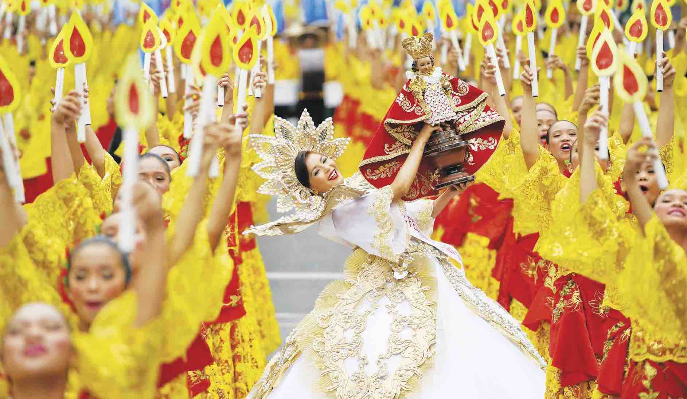
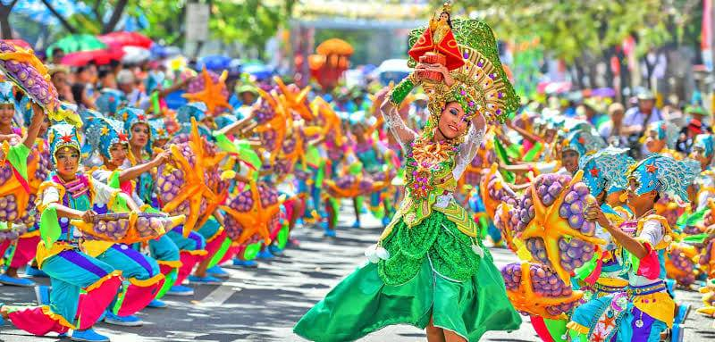

"Sinulog Festival"
The Sinulog-Santo Niño Festival is an annual cultural and religious festival held on the third Sunday of January in Cebu City and is the centre of the Santo Niño Catholic Christian celebrations in the Philippines.
The festival is considered to be the biggest festival in the Philippines, with every celebration of the festival routinely attracting between 1 million and 1.5 million people each year.[1] Aside from the religious aspect of the festival, Sinulog is also famous for its street parties, usually happening the night before and the night of the main festival.[2] The festival is nicknamed the "Grandest Festival in the Philippines."
Other places in the Philippines also celebrate their own version of the festival in honor of Santo Niño, both within Cebu like Carmen, and outside Cebu, including Tondo, Manila, Kabankalan, General Santos, Maasin, Cagayan de Oro, Butuan, Pagadian, and Balingasag, Misamis Oriental.

"Etymology"
The word Sinulog comes from the Cebuano adverb sulog, roughly meaning "like water current movement;" describing the forward-backward dance movements. The dance consists of two steps forward and one step backward, done to the sound of drums. The dance is categorized into Sinulog-base, free-interpretation, and street dancing. Candle vendors at the Basilica continue to perform the traditional version of the dance when lighting a candle for the customer, usually accompanied by songs sang in Cebuano.
Sinulog is the ritual prayer-dance honoring Señor Santo Niño or the Child Jesus. An image of the Child Jesus is said to be the baptismal gift the Portuguese conquistador Ferdinand Magellan gave to Hara Amihan (Humanay) of Zebu (now Cebu) in April 1521. The image, believed to be miraculous, is housed at the Basilica Minore del Santo Niño in downtown Cebu City.
The Sinulog dance moves are often identified to be two steps forward and one step backward as the dancer sways to a distinct rhythm of drums. This movement is made to resemble the current (sulog) of what was known as Cebu's Pahina River.
According to historical accounts, Cebuanos had already performed dances similar to the Sinulog to honor animist idols long before the introduction of Christianity to the Philippines, which arrived in Cebu with the arrival of Ferdinand Magellan who led a Spanish expedition on April 7, 1521. The original image of Santo Niño was said to have been left by members of the Magellan expedition, and were said to be rediscovered when the Spanish returned in 1565 in an expedition led by Miguel López de Legazpi, which eventually led to the Spanish colonial era in the Philippines.
Today the Sinulog commemorates the Filipino people's acceptance of Christianity (specifically, Roman Catholicism), and their rejection of their former animist beliefs (worship of nature).[neutrality is disputed] The first of these conversions happened in 1521 on the island of Cebu, when Indianized-Sanskritized ruler Rajah Humabon and his queen Amihan (Humamay) were baptized along with their subjects, becoming Carlos and Juana of Cebu.
"History"
On March 16, 1521, the Portuguese explorer Ferdinand Magellan arrived and planted the cross on the shores of Cebu, claiming the territory for Spain. He presented the image of the Child Jesus to the Rajah Humabon. Hara Humamay (or Amihan in some versions) was later named, Queen Juana after Juana, mother of Carlos I. along with the rulers of the island and some 800 natives were also converted to the Roman Catholic faith.
This event is frequently used as basis for most Sinulog dances, which dramatize the coming of the Spaniards and the presentation of the Santo Niño to the Queen. A popular theme among Sinulog dances is Queen Juana holding the Santo Niño in her arms and using it to bless her people who were often afflicted with sickness believed to be caused by demons and other evil spirits.
The Sinulog dance steps are believed to originate from Rajah Humabon's adviser, Baladhay.[dubious – discuss] It was during Humabon's grief when Baladhay fell sick. Humabon ordered his native tribe to bring Baladhay into a room where the Santo Niño was enthroned, along with the other pagan gods of the native Cebuanos. After a few days passed, Baladhay was heard shouting and was found dancing with utmost alertness. Baladhay was questioned as to why was he was awake and shouting. Pointing to the image of the Santo Niño, Baladhay explained that he had found on top of him a small child trying to wake him and tickling him with the midrib of the coconut. Greatly astonished, he scared the child away by shouting. The little child got up and started making fun of Baladhay. In turn, Baladhay danced with the little child and explained that he was dancing the movements of the river. To this day, the two-steps forward, one-step backward movement is still used by Santo Niño devotees who believe that it was the Santo Niño's choice to have Baladhay dance.